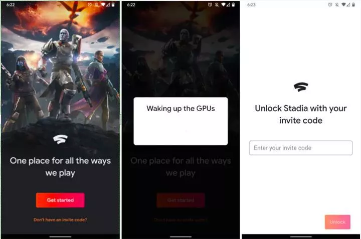
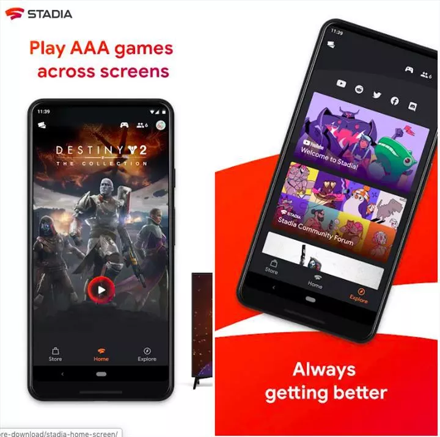

AMD için beklenen özellik geliyor!
Nvidia‘nın kullanıcılara ışın izleme teknolojisi yani Ray Tracing özelliğini sunmasıyla birlikte, AMD ile Nvidia arasındaki rekabet kızıştı. Birçok oyun sever tarafından da oldukça beğenilen Ray Tracing AMD ekran kartları için geliyor.devamını gör...

4D Mikroskoptan Alınan İnanılmaz Görüntüler, Moleküler Yapıları Sanata Dönüştürüyor
Günümüzde birçok mikroskop bulunuyor. Oldukça gelişmiş teknolojiler ile çalışan araştırmacılar yine de molekülleri istenilen netlikte göremeyebiliyor.devamını gör...

Sony ilginç PlayStation 5 patenti ile gündemde
Sony, 2020 yılında çıkacak olan yeni PlayStation 5 modeli için hazırlıklarına devam ediyor. İddialara göre şirket, Brezilya Patent Enstitüsü’ne (INPI) gelecek yıl çıkaracağı PS5 modeli için başvuruda bulundu. PS5 patenti tüm dikkatleri üzerine çekmeyi başardı.devamını gör...

Google Stadia uygulaması Play Store’da yayınlandı
Google'ın bulut üzerinden AAA oyunları oynamaya imkan sağlayacak abonelik hizmeti Stadia, 19 Kasım'da resmen kullanıma açılacak. Hizmetin Android uygulaması ise bugün kullanıcılara sunuldu.Google’ın oyunları internet üzerinden yayınlayan hizmeti Stadia, hemen hemen her cihazda çalışma vaadiyle geliyor ve iki hafta sonra resmi olarak kullanıcılara sunulacak. 19 Kasım’daki tanıtım öncesinde ise Android uygulaması, Play Store üzerinden indirilmeye açıldı.
 Yeni Google Stadia uygulamasını açmak, sizi Destiny 2’den bir kapak resmine sahip ekrana getiriyor. Ekranda “Get started” seçeneğine dokunmak, sizi hesap seçme sayfasına getiriyor ve ardından doğru hesabı seçtiğinizden emin olmak için doğrulamanız isteniyor. Oturum açma tamamlandıktan sonra gelen pencere, sizden Stadia Founders ya da Premiere edition kitiyle gelen davet kodunu girmenize imkan sağlıyor. Bu kodu girmeden uygulamada daha derine gitmek şimdilik mümkün değil.
 Play Store’da yer alan tanıtım görselleri, uygulamanın arayüzü hakkında uygulamanın kendisinden daha çok bilgi veriyor. Ana sekme içerisinde kütüphanenizdeki oyunları gösterecek uygulama, bunların her biri üzerinde büyük bir oyna butonunu bulunduracak. Diğer sekme olan keşfet ise tahminen oyunlarınızla ya da girdiğiniz tartışmalarla ilgili gönderileri size gösterecek. Keşfet sekmesinin en üstünde ise YouTube, Reddit, Twitter, Facebook ve Discord için ayrı ayrı butonlar yer alıyor.
Stadia’nın halka açık ilk uygulaması olsa da APK’nın sürüm numarası, 1.45.278447916 ile bir hayli yüksek. Bu durum, uygulamanın Google içerisinde şimdiye kadar bir süre geliştirilmiş olduğunu gösteriyor.
Hakkımızda
Güncel olmayan teknoloji haberleri sunan amatör bir web sitesi.